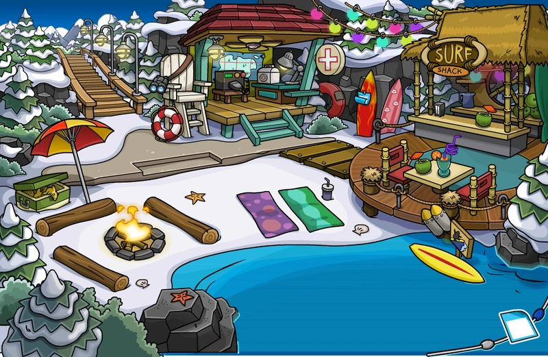

A gente não viu muuuito sobre Sistemas Operacionais, e o que nós vimos foi mais pro começo do ano. Enfim, eu ainda lembro daquele inferno de ter que ficar criando 1001 pastas, e printando uma por uma pra mandar pro Igor no Classroom, e também lembro de nós limpando um PC velho do SENAI, foi divertido. Creio que aquela aula sobre Cyber Segurança também está relacionada com isso, aquela aula foi legal, com coisas envolvendo hacking e etc.
Pois bem, eu não gosto muito de Hardware, mas essa "matéria" foi até que dahorinha.
Tharic
X